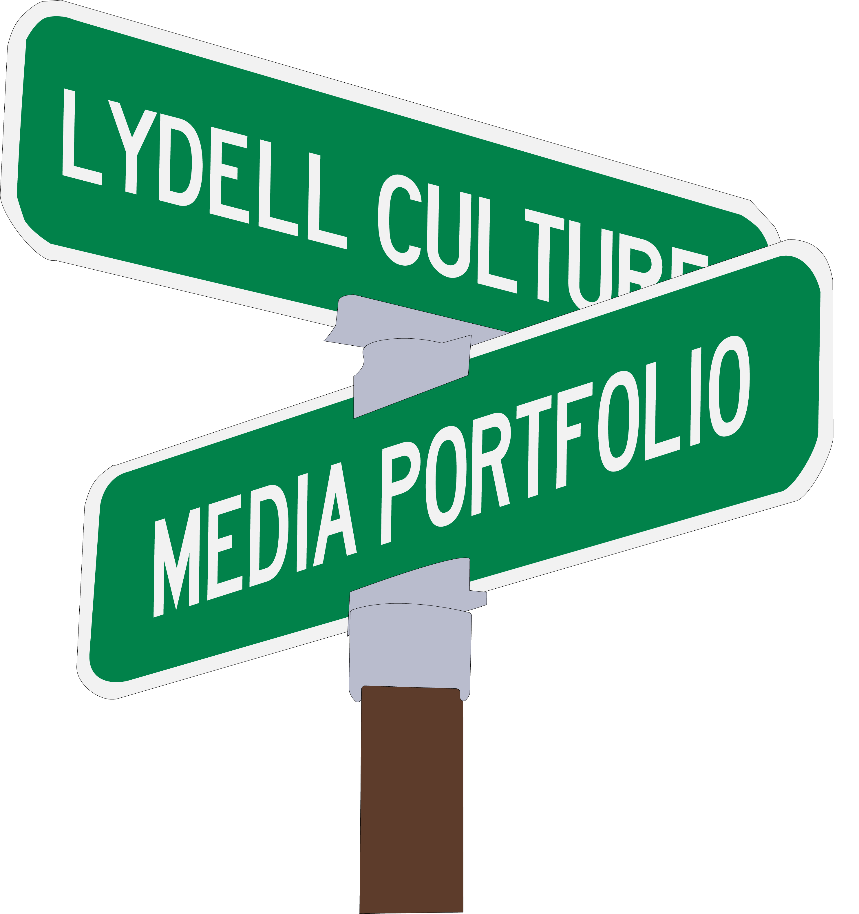
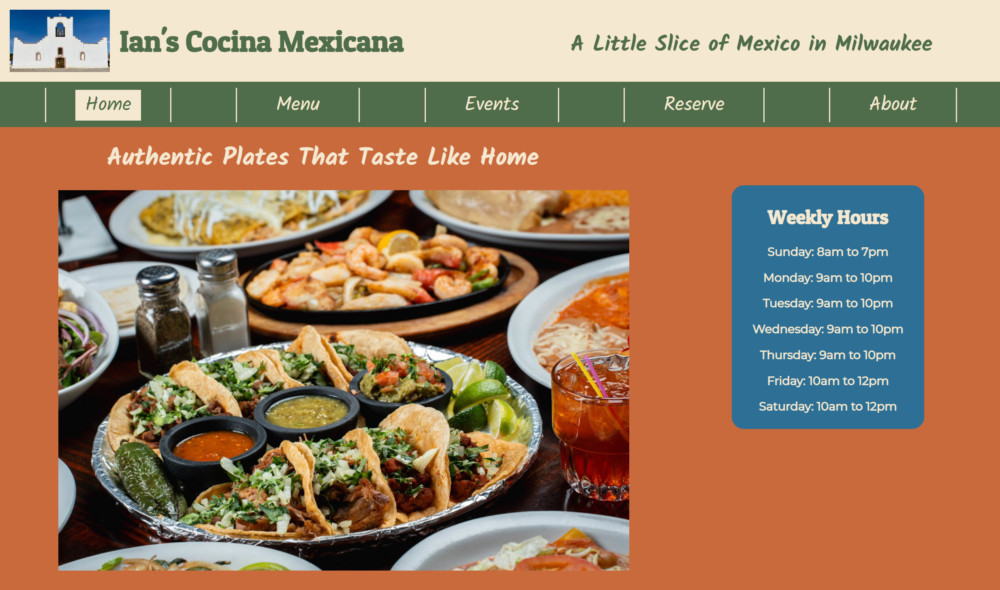
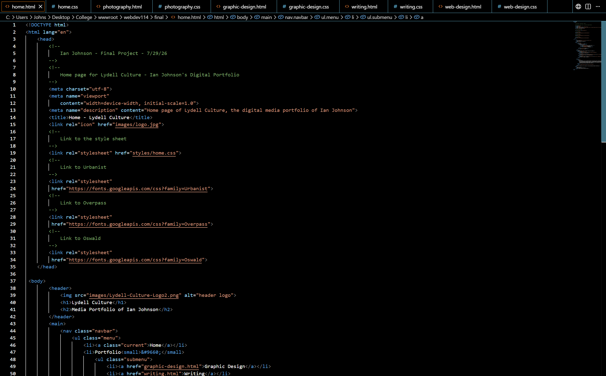
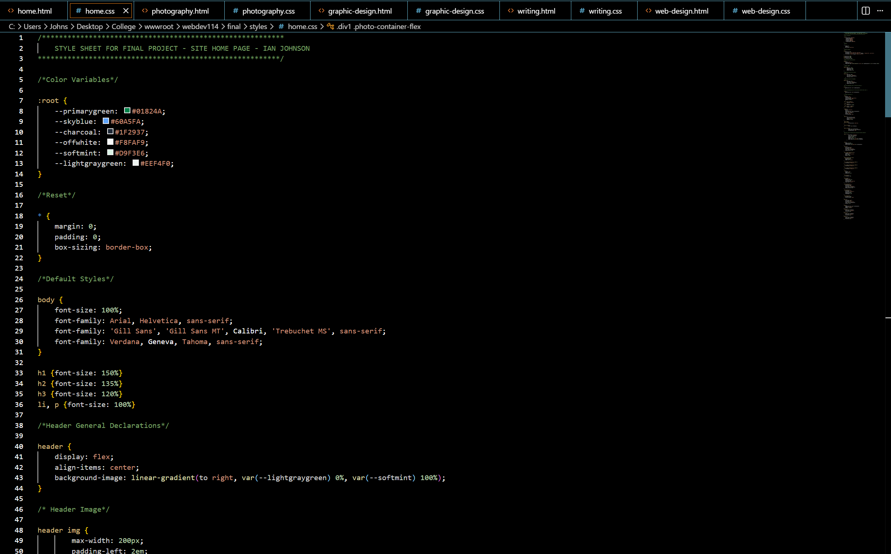

My submission for the 5-Page Website Project in WebDev114 - Summer 2026

HTML for the Final Project (this website) in WebDev114 - Summer 2026

CSS for the Final Project (this website) in WebDev114 - Summer 2026